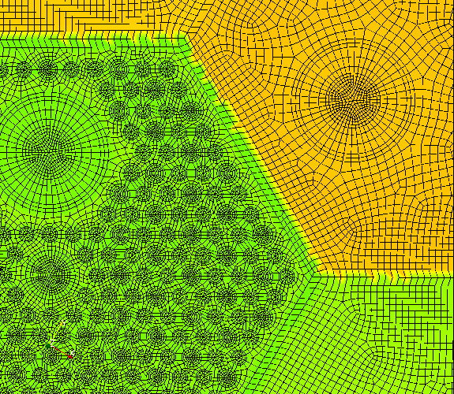
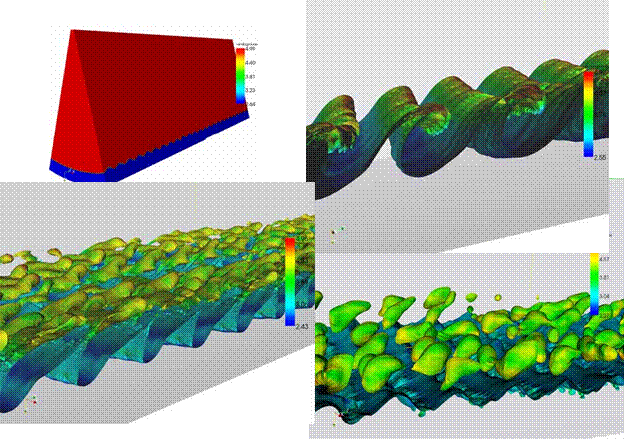

Nuclear Reactor Simulation
Nuclear energy can play a key role in securing the energy independence of the United States by offering a clean, safe alternative to traditional fossil fuel energy production. Simulation and modeling will play a key role in the development of next generation nuclear reactors to improve their design, implementation and operation. The physics associated with these systems operate in very complex geometrical domains and will benefit from the tools and technologies developed by ITAPS. We are involved in several collaborations whose goals are to develop and deploy high-performance computing tools for coupled multi-scale simulations of the sodium fast reactor.
Next Generation Nuclear Reactor Design
Funded by DOE's Office of Nuclear Energy under the Nuclear Energy
Advanced Modeling & Simulation (NEAMS) program.
ITAPS Personnel: Tim Tautges (ANL)
Nuclear Energy Personnel: Andrew Siegel (ANL)
Project Status: Active
The geometries of reactor cores can be quite complex and require scalable geometry and mesh generation tools. For example, the 217-pin fuel assembly shown in the figure below uses a conformal hexahedral mesh for the 1520 geometrical volumes. Each fuel pin is wrapped with a thin wire the small scale of which significantly complicates the mesh generation process.
Once the mesh is generated, the physics that is modeled is a combination of thermal hydraulics, structural mechanics, and neutronics. A different simulation tool is used for each of these physical processes, but there is a strong need for them to interact with and exchange data with each other. The SHARP framework being developed at Argonne National Laboratory provides the infrastructure necessary to do this coupling on large-scale computer architectures. ITAPS technology is used as the basis of the SHARP reactor simulation project and the common ITAPS interfaces simplify the coupling between thermal/hydraulics and neutronics physics modules. These interfaces and the ITAPS approach in general also serve as a means for collaborating with other institutions and for coupling with commercial codes.
Nuclear Reactor Core Geometry and Mesh Generation
Funded by DOE's Office of Nuclear Energy under the Nuclear Energy
Advanced Modeling & Simulation (NEAMS) program.
ITAPS Personnel: Tim Tautges (ANL)
Nuclear Energy Personnel: Rajeev Jain (ANL)
Project Status: Active
Generating geometric models and meshes for reactor cores can be a tedious and error-prone process, despite the high degree of repeated structures commonly found in these models. The Reactor Geometry Generator (RGG) tool has been developed, based on ITAPS technologies, that takes advantage of these repeated structures to simplify specification of geometry and mesh parameters.Figure: RGG process execution, showing the various steps and input files.
RGG works in 3 phases, depicted in the figure to the left:
- A text file is read by the AssyGen code, which generates a geometric model along with a meshing script suitable as input to the CUBIT mesh generation toolkit.
- The assembly model is meshed, by running CUBIT on the meshing script produced by AssyGen, or using a customized approach.
- The CoreGen tool reads individual assembly meshes, copy/moves them into the core lattice based on input in another text file, then merges coincident mesh vertices.
Since geometric models are only produced for each assembly instance, generating a mesh for whole-core models is much more efficient (in both memory and time) than doing the entire process in a meshing tool like CUBIT. For example, RGG generated the 12 million element hex mesh shown in the figure in under 30 minutes on a desktop workstation using less than 6 GB of memory.
Figure: A 12-million element hexahedral mesh for a 1/6 Very High Temperature Reactor (VHTR) core. View of the whole core, consisting of 57 assemblies (left); a closeup of a few of the assemblies, showing fuel rods and control rods (right).

RGG is available as open-source software, as part of the MeshKit mesh generation library.
Coupled Neutronics, Thermal Analysis for ATR Experiments
Funded by DOE's Office of Nuclear Energy
ITAPS Personnel: Tim Tautges (ANL)
Nuclear Energy Personnel: Stuart Slattery (INL Summer Intern, Univ Wisconsin)
Project Status: Completed
The Advanced Test Reactor (ATR) at Idaho National Laboratory is used to test advanced reactor materials in a high-radiation environment. Some test materials include Uranium and other fissile material, and can generate considerable heat while resident in the ATR core. For these experiments it is important to evaluate the cooling requirements and the expected structural response, to make sure the experiments are maintained in a safe condition and do not threaten the safety of ATR itself. Neutron heating is computed using the DAG-MCNP5 Monte Carlo code, with results tallied on a cylindrical mesh. These results are transferred to a body-fitted finite element hexahedral mesh, which is input to the Abaqus finite element code for structural mechanics and heat transfer analysis.ITAPS tools are used in many phases of this analysis. The DAG-MCNP5 code evaluates particle transport by performing ray-tracing on a facet-based model derived from CAD geometry. Geometry is read using the CGM library; the geometric topology of this model is read into MOAB and represented using entity sets, with edge and face facets also represented for model edges and faces. This model forms the basis for ray-tracing, which uses MOAB's hierarchical Oriented Bounding Box tree for improved efficiency. The cylindrical mesh storing DAG-MCNP5 radiation heating and the body-fitted Abaqus mesh are both read into MOAB, and heating results are mapped from one mesh to the other using MOAB's kdTree for point location between meshes. Some of the visualizations used in this process used the VisIt package with the ITAPS iMesh plugin.
Figure: Cylindrical mesh showing radiation heating (left); assembly temperature profile computed by Abaqus based on transferred radiation heating (right).

Multiphase flow for accident scenarios
Funded under US DOE Nuclear Energy Research Initiative for Consortia, DE-PS07-07ID14812
ITAPS Personnel: Ken Jansen (RPI), Roman Samulyak (BNL), Jim Glimm (BNL)
Nuclear Energy Personnel: Michael Podowski (RPI)
Project Status: Active
The overall purpose of this collaboration is to deploy advanced simulation capabilities for next generation reactor systems utilizing newly available, high-performance computing facilities. The goals are 1) to develop and deploy high-performance computing tools for coupled thermal-hydraulic, neutronic, and materials multi-scale simulations of the sodium fast reactor (SFR) and 2) apply the new computational methodology to study reactor fuel and core transient response under beyond-design and accident conditions.
The work will encompass a broad spectrum of issues that are critical for developing next-generation reactors. Deliverables will include multi-physics, multi-scale computational modeling capabilities to investigate the impact of long-term thermal and mechanical loads and high-burnup fuel on reactor safety and accident mitigation strategies. The consortium will address three major groups of problems: 1) development of new simulation capabilities for state-of-the-art computer codes (FronTier, PHASTA, and NPHASE) coupled with MD-type analysis, 2) development of advanced numerical solvers for massive parallel computing, and 3) deployment of a multiple-code computational platform for the Blue Gene supercomputer simulations of SFR fuel performance during accidents.
Researchers will use the simulation codes to study fuel performance, including molecular-scale fission product release from ceramic fuel material, local core degradation, and fission product/fuel particle transport and release in the reactor core. Since no single computer code or technology level can be expected to cover such a broad range of design and operation issues during the reactor's lifetime, it is anticipated that the proposed suite of tools will dramatically improve the accuracy and efficiency of reactor simulations. This, in turn, will significantly reduce conservative design and safety margins that are inherently associated with current reactor engineering methods.
Schematic of fuel degradation and transport in SFR during fuel rod failure accidents.
The NPHASE, PHASTA and FronTier codes are well suited to form the basis of a multidimensional, multifield and multiscale simulation capability. The NPHASE code is robust finite volume solver for the simulation of ensemble averaged time-dependent two-phase flows. PHASTA is a finite element, time-accurate computer code using single phase and level-set tracking methods. FronTier is a multiphysics code for the simulation of multiphase/free surface flows based on the explicit tracking of material interfaces. To enhance and optimize the performance of these three codes on massively parallel supercomputers, state-of-the-art multilevel solvers software for nonlinear partial differential equations will be used, developed at Columbia University.
ITAPS related software
FronTier CodeFronTier, a multiphysics code for the simulation of multiphase / free surface flows based on the method of front tracking has been developed at Stony Brook University in collaboration with BNL and LANL. Front tracking is a numerical method in which surfaces of discontinuity are given explicit computational degrees of freedom, supplementing the continuous solution values at regular grid points. FronTier has been tested on multi-material, multi-physics problems using massively parallel supercomputers, and used for simulations of turbulent fluid mixing, design of liquid mercury targets for future advances accelerators, pellet fuelling of thermonuclear fusion reactors, and astrophysical studies.
The FronTier research will be focused in the following major directions:
- The development of new capabilities of the FronTier code to enable simulations of the fuel rod failure during severe accidents in Liquid Metal Fast Rectors. New phase transition models for the fuel melting and vaporization will be developed as well as models fpor the formation and evolution of cracks in the solid fuel cladding. FronTier will simulate the creation of a melt volume within the fuel rod, release of volatile fission products and the subsequent rise in melt volume pressure, growth of the melt volume, the clad failure and debris ejection into the coolant channel.
- The modeling and simulations of the injection of fission products from the failed fuel rod into liquid coolant and the injection of liquid coolant into the inside of fuel elements. The interface with the NPHASE and PHASTA codes will also be developed for the data exchange purpose.
- FronTier will provide new closure models for multiphase systems and benchmark with existing averaged models of NPHASE through direct numerical simulations at microscale.
- The development of geometrical interface tracking capabilities to NPHASE and PHASTA codes, and the multiple code platform. Explicit interface tracking will increase capabilities of NPHASE and PHASTA to simulate complex multiphase flows. We will leverage the development of the geometrical front tracking package FronTier-Lite within the SciDAC ITAPS collaboration, and provide interfaces for its use in both single and coupled code simulations.
PHASTA is a parallel, hierarchic (higher order accurate from 2nd-5th order accurate depending on function choice), adaptive, stabilized (finite element) transient analysis flow solver (both incompressible and compressible) that has been developed at RPI. This approach has been shown by Karanam et. al. [2007], Whiting et. al. [2003], Whiting and Jansen [2001] and Jansen [1999] to be an effective tool for bridging a broad range of length scales in turbulent (RANS, LES, DES, DNS) flows. PHASTA (and its predecessor ENSA) was the first unstructured grid LES code [Jansen, 1993; Jansen, 1994; and Jansen, 1999] and has been applied to turbulent flows ranging from validation benchmarks (channel flow, decay of isotropic turbulence) to complex flows (airfoils at maximum lift, flow over a cavity, near lip jet engine flows and fin-tube heat exchangers). It has also developed advanced anisotropic adaptive algorithms [Sahni et al., 2006,2007; Mueller et al., 2005; Shephard et al., 2005] and the most advanced LES/DES models [Hughes et al. 2000, Martinez and Jansen, 2000, 2003, 2004, 2005a and 2005b]. Note that DES, LES, and DNS are computationally intensive even for single phase flows. We have recently [Nagrath et al., 2006; Nagrath et al., 2005] extended this capability to two phase flows where we use the level set method to track the boundary between two immiscible fluids (either compressible where we captured new instabilities in sonoluminescence or incompressible where we studied bubble coalescence and two-phase turbulence including ongoing studies of turbulent annular flow and water jet air entrainment). Making simulations this complex grid independent, while ambitious, is reasonable with available computational resources due the efficient use of anisotropically adapted unstructured grids and highly scalable performance on massively parallel computers (the code has shown perfect scaling out to 32k IBM Blue Gene processors (largest available for testing)). An example of PHASTA's current two-phase flow modeling is shown in the figure below where an annular flow (blue is liquid, red is gas, 30 degree sector is modeled) is initiated with an unstable wave which grows, breaks and forms droplets (surface shown is the phase interface which is colored by local speed).

References
Hughes, T.J.R., Mazzei, L., and Jansen, K.E.,
2000,
“Large-Eddy Simulation and the Variational Multiscale Method,” Computing and Visualization in Science,
3, 47-59.
Jansen, K.E., 1999, “A stabilized finite element
method for
computing turbulence,” Computer Methods
in Applied Mechanics and Engineering, 174, 299-317.
Jansen, K.E., 1993, “Unstructured Grid Large
Eddy
Simulations of Wall Bounded Flows”, Annual Research Briefs, Center
for
Turbulence Research, NASA Ames/Stanford University, 151.
Jansen, K.E., 1994, “Unstructured Grid Large Eddy Simulations of Flow Over an Airfoil”, Annual Research Briefs, Center for Turbulence Research, NASA Ames/Stanford University, 161-.
Jansen, K.E., Johan, Z., Hughes, T.J.R., 1993,
“Implementation of a One-Equation Turbulence Model within A Stabilized
Finite Element
Formulation of a Symmetric Advective-Diffusive System,” Computational
Methods in Applied Mechanics and Engineering, 105,
405-.
Karanam, A.K., Jansen, K.E. and Whiting, C.H.,
2007,
“Geometry based pre-processor for parallel fluid dynamic simulations”, Engineering
with Computers (in press).
Mueller, J., Sahni, O., Jansen, K.E., Shephard,
M.S. and
Nagrath, S, Jansen, K.E. ,
Lahey, R.T. and Akhatov,
Nagrath,S. ,
Jansen, K.E. , and Lahey, R.T. , 2005,“Three Dimensional
Simulation of Incompressible
Two Phase Flows Using a Stabilized Finite Element Method and the Level
Set
Approach”, Computer Methods in Applied
Mechanics and Engineering, 194, n
42-44,
4565-4587.
Sahni, O., Mueller, J., Jansen,
K.E., Shephard, M.S. and
Sahni, O., Jansen, K.E.,
Shephard, M.S., Taylor, C.A., and Beall, M.W., 2007, “Adaptive Boundary
Layer
Meshing for Viscous Flow Simulations”, Engineering
with Computers, accepted.
Shephard, M.S., Flaherty, J.E., Jansen, K.E.,
Li, X., Luo,
X., Chevaugeon, N., Remacle, J.F., Beall, M.W., and O’Bara, R.M., 2005,
“Adaptive Mesh Generation for Curved Domains”, Journal of
Applied Numerical Math, 52, 251-271.
Tautges,
T. J., Jain, R., "Creating Geometry and Mesh Models for Nuclear Reactor
Core Geometries using a Lattice Hierarchy-Based Approach", 19th International Meshing Roundtable, Oct
3-6, 2010.
Tejada-Martinez, A.E. and Jansen, K.E., 2005, “A
parameter-free dynamic subgrid-scale model for large-eddy simulation”, Computer Methods in Applied Mechanics and
Engineering, 194, No. 9,
1225-1248.
Tejada-Martinez, A.E. and Jansen, K.E., 2004, “A
Dynamic
Smagorinsky Model with a Dynamic Filter Width Ratio”, Physics of
Fluids,
16, 2514-2528.
Tejada-Martinez, A.E. and Jansen, K.E., 2005,
“On the
Interaction Between Dynamic Model Dissipation and Numerical Dissipation
Due to
Streamline Upwind/Petrov-Galerkin Stabilization”, Computer Methods
in
Applied Mechanics and Engineering, 194,
n9-11, 1225-1248.
Tejada-Martinez, A.E. and Jansen, K.E., 2003,
“Spatial Test
Filters for Dynamic Model LES with Finite Elements”, Communications
in
Numerical Methods in Engineering, 19, 3, 205-213.
Whiting, C.H. and Jansen, K.E., 2001, “A
Stabilized Finite
Element Formulation For The Incompressible Navier-Stokes Equations
Using A
Hierarchical Basis,” International
Journal of Numerical Methods in Fluids, 35, 93-116.
Whiting, C.H, Jansen, K.E. and Dey, S., 2003,
“Hierarchical
Basis for Stabilized Finite Element Methods for Compressible Flows,” Computer Methods in Applied Mechanics and
Engineering, 192, 5167-5185.